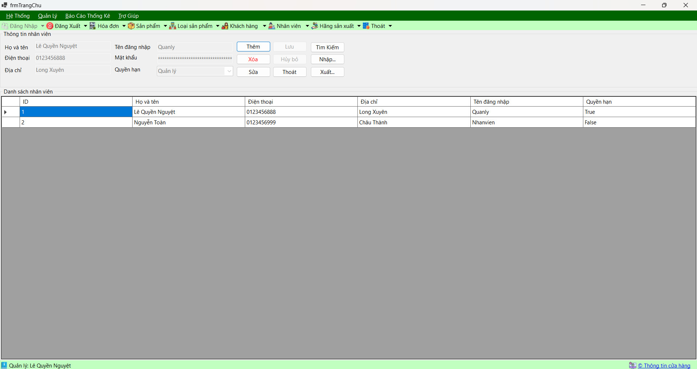

Hướng dẫn sử dụng màn hình Nhân viên.
Nhân viên 1: Lê Quyền Nguyệt
Số điện thoại: 0123456888
Địa chỉ: Long Xuyên
Vị trí: Quản lý
Mã hóa mật khẩu: $2a$11$XGOVk9m4HqzXBlwVvhKN/ur8FS/keV9QyuCwikTL67sL0gqNUupMa
Trạng thái: 1
Nhân viên 2: Nguyễn Toàn
Số điện thoại: 0123456999
Địa chỉ: Châu Thành
Vị trí: Nhân viên
Mã hóa mật khẩu: $2a$11$c1syEtekaZ6OJrX77mGoJ.6mu4YuUjUHvKrliW8oOU3M3u7I6zyuy
Trạng thái: 0
Bước 1: Truy cập vào hệ thống quản lý nhân viên và đăng nhập bằng tài khoản quản trị viên.
Bước 2: Điều hướng đến mục "Nhân viên" trên thanh công cụ và chọn "Thêm nhân viên mới".
Bước 3: Điền các thông tin cần thiết vào biểu mẫu bao gồm tên, số điện thoại, địa chỉ, vị trí công việc và mật khẩu.
Bước 4: Kiểm tra lại các thông tin đã nhập để đảm bảo không có sai sót.
Bước 5: Nhấn "Lưu" để hoàn tất quá trình thêm nhân viên mới vào hệ thống.
Bước 1: Truy cập vào hệ thống quản lý nhân viên và đăng nhập bằng tài khoản quản trị viên.
Bước 2: Tìm kiếm và chọn nhân viên cần sửa từ danh sách hiện có.
Bước 3: Nhấn vào tên nhân viên để mở trang thông tin chi tiết.
Bước 4: Chỉnh sửa thông tin cần thay đổi như tên, số điện thoại, địa chỉ, vị trí công việc, hoặc mật khẩu.
Bước 5: Kiểm tra lại các thông tin đã sửa để đảm bảo đúng và nhấn "Lưu" để cập nhật thông tin mới.
Bước 1: Truy cập vào hệ thống quản lý nhân viên và đăng nhập bằng tài khoản quản trị viên.
Bước 2: Tìm kiếm và chọn nhân viên cần xóa từ danh sách hiện có.
Bước 3: Nhấn vào tùy chọn "Xóa" hoặc "Remove" trên trang thông tin chi tiết của nhân viên.
Bước 4: Xác nhận hành động xóa nhân viên và chờ xác nhận hoặc điền một lý do cụ thể nếu yêu cầu.
Bước 5: Sau khi xác nhận, nhân viên sẽ được loại bỏ khỏi hệ thống và không thể khôi phục.
Bước 1: Mở tệp Excel chứa thông tin nhân viên mà bạn muốn nhập vào hệ thống.
Bước 2: Chọn và sao chép dữ liệu nhân viên từ Excel (bao gồm tên, số điện thoại, địa chỉ, vị trí công việc, v.v.).
Bước 3: Truy cập vào hệ thống quản lý nhân viên và tìm tùy chọn "Nhập từ Excel" hoặc "Import from Excel".
Bước 4: Dán dữ liệu đã sao chép từ Excel vào biểu mẫu nhập liệu trong hệ thống.
Bước 5: Kiểm tra và xác nhận các trường thông tin đã nhập, sau đó nhấn "Nhập" hoặc "Import" để hoàn tất quá trình nhập nhân viên từ Excel.
Bước 1: Truy cập vào hệ thống quản lý nhân viên và đăng nhập bằng tài khoản quản trị viên.
Bước 2: Tìm tùy chọn "Xuất dữ liệu" hoặc "Export data" trong hệ thống.
Bước 3: Chọn các tùy chọn xuất dữ liệu nhân viên ra tệp Excel, như lọc theo bộ lọc, theo vị trí công việc, v.v.
Bước 4: Xác nhận và bắt đầu quá trình xuất dữ liệu ra tệp Excel.
Bước 5: Chờ đợi cho đến khi quá trình xuất hoàn tất, sau đó tải tệp Excel chứa dữ liệu nhân viên đã xuất từ hệ thống.